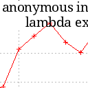

Lambda Expressions vs. anon. Inner Classes

Angefangen hat alles mit der Information, dass ein Meetup hier in der Nähe zum Thema "Java upside down: funktionale Programmierung in Java mit Vavr"
Auf das Meetup Java upside down: funktionale Programmierung in Java mit Vavr hat mich ein Kollege aufmerksam gemacht. Ich werde wahrscheinlich hingehen. Nun habe ich mich hier bereits hin und wieder als jemand dargestellt, der nicht unbedingt ein Fanboy des funktionalen Ansatzes in Java ist.
Ich habe allerdings auch schon einmal gezeigt, dass manche Neuerungen in Java nicht nur syntactic Sugar darstellen und ich mich von handfesten, messbaren Vorteilen durchaus überzeugen lasse.
Also habe ich einfach mal einen Test gemacht und 30 mal hintereinander 1000000 Runnables instantiiert - einmal als anonymous inner class und einmal als Lambda-Expression. Die Visualisierung - mittels Gnuplot - des Ergebnisses ist unten angehängt. Man sieht, dass die Variante mit anonymer innerer Klasse sowohl vor Tätigwerden des JIT-Compilers als auch danach deutliche Nachteile gegenüber den Lambda-Ausdrücken hat. Nachdem der JIT tätig geworden ist ist der Speedup sogar wesentlich dramatischer. Diese Versuche fanden mit sehr einfachen Implementierungen statt - die jeweilige run-Methode enthielt gerade mal eine Zeile. Vorsichtigerweise probierte ich daher den Test nochmals mit einem vergleichsweise umfangreichen Codeabschnitt als Inhalt des Lambda-Ausdrucks - das Ergebnis blieb dasselbe.
Das deutet wieder mal darauf hin, dass ich bei genügend freier Zeit einmal meinen Codebestand nach alten anonymen Inner Classes durchflöhen und diese doch durch Lambdas ersetzen sollte...
Java 8 - Runnable example using Lambda expression https://www.boraji.com/java-8-runnable-example-using-lambda-expression
Links
{kind=link}
Artikel, die hierher verlinken
Generic Methoden vs. Casting in Java
26.03.2022
Ich habe hier immer mal wieder über das Spannungsfeld zwischen Syntactic Sugar und sinnvollen Spracherweiterungen ganz speziell mit Blick auf Java ausgelassen - neulich hatte ich eine weitere Frage, die sich nur im Experiment klären ließ...
Exception-Handling in functional Java
09.05.2021
Eine kleine Linksammlung mit interessanten Einsichten (auch historisch) zum Thema Fehlerbehandlung (insbesondere Exceptions) bei der funktionalen Programmierung mit Java
Seiteneffekt-freie Programmiersprachen
05.04.2021
Ich habe mich hier verschiedentlich darüber ausgelassen, was Syntactic sugar in Java bedeutet und was man beachten sollte, um mit einigen einfachen Mitteln die Performanz von Java-Anwendungen zu steigern.
AtomicInteger vs. Integer
24.03.2019
Ich habe am Wochenende wieder einmal mit Java-Benchmarks experimentiert


Vor 5 Jahren hier im Blog
-
Mandelbrot-Sets mittels Shadern berechnen
17.05.2019
Nachdem ich in den letzten verregneten Tagen auf Youtube in den Videos von Numberphile versunken bin, hat mich eines davon angestachelt, mich selbst mit dem Mandelbrotset zu beschäftigen. Als ich dann noch Code fand, der behauptete, das auf einer Graphikkarte mittels Shadern berechnen zu können, war es um mich geschehen...
Weiterlesen...
Tags
Android Basteln C und C++ Chaos Datenbanken Docker dWb+ ESP Wifi Garten Geo Git(lab|hub) Go GUI Gui Hardware Java Jupyter Komponenten Links Linux Markdown Markup Music Numerik PKI-X.509-CA Python QBrowser Rants Raspi Revisited Security Software-Test sQLshell TeleGrafana Verschiedenes Video Virtualisierung Windows Upcoming...
Neueste Artikel
- Erste Vor-Version eines Gis-Plugin für die sQLshell
Wie bereits in einem früheren Artikel erwähnt plane ich, demnächst ein Plugin für die sQLshell anzubieten, das eine Visualisierung von Daten mit räumlichem Bezug im Stil eines Geoinformationssystems erlaubt.
Weiterlesen... - bad-certificates Version 2.1.0
Das bereits vorgestellte Projekt zur automatisierten Erzeugung von Zertifikaten mit allen möglichen Fehlern hat eine Erweiterung erfahren und verfügt über ein Partnerprojekt - beide sind nunmehr in der Version 2.1.0 freigegeben
Weiterlesen... - SQLite als Geodatenbank
Wie bereits in einem früheren Artikel beschrieben treibe ich derzeit Anstrengungen voran, die sQLshell attraktiver für Nutzer zu machen, die mit Geodatenbanken arbeiten.
Weiterlesen...
Manche nennen es Blog, manche Web-Seite - ich schreibe hier hin und wieder über meine Erlebnisse, Rückschläge und Erleuchtungen bei meinen Hobbies.
Wer daran teilhaben und eventuell sogar davon profitieren möchte, muß damit leben, daß ich hin und wieder kleine Ausflüge in Bereiche mache, die nichts mit IT, Administration oder Softwareentwicklung zu tun haben.
Ich wünsche allen Lesern viel Spaß und hin und wieder einen kleinen AHA!-Effekt...
PS: Meine öffentlichen GitHub-Repositories findet man hier - meine öffentlichen GitLab-Repositories finden sich dagegen hier.